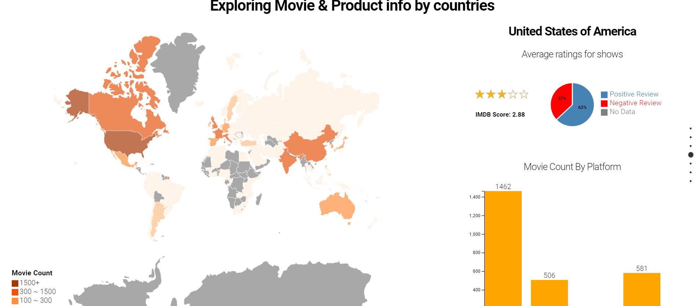
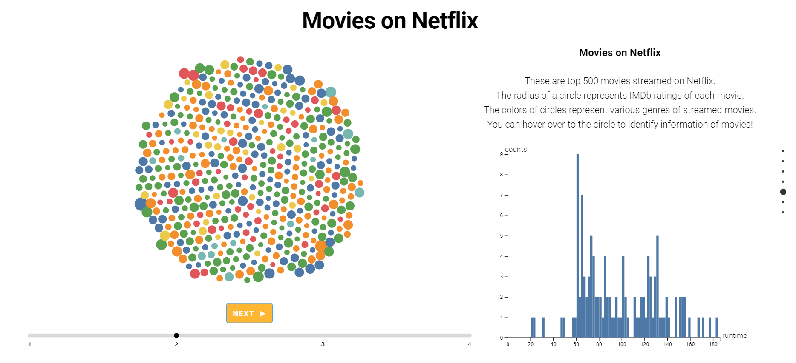
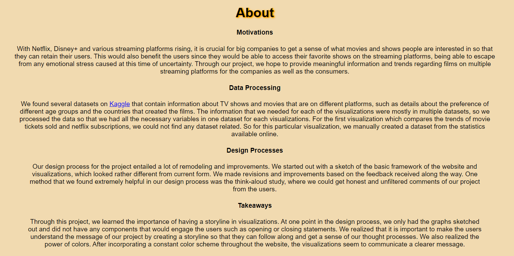

Sung Joon Park (Josh)

Computer Science B.A & Economics Minor @ BC
Morrissey College of Arts & Sciences 2021
parkxd@bc.edu
Morrissey College of Arts & Sciences 2021
parkxd@bc.edu
I am a senior at Boston College, Computer Science major and Economics minor. I'm interested in topics such as data analysis, data visualization and front-end. I like to watch movies, travel and explore new places, and go bowling.
News
Undergraduate Researcher @ Korea University (KR)
MAR 2020 - JUL 2020
Recruitment Intern @ Amazon Web Services (KR)
MAY 2019 - NOV 2019
Enterprise Repository Master @ NN Company (CZ)
MAY 2018 - JUL 2018
Dealing Room Intern @ Societe Generale (KR)
JUL 2017 - AUG 2017
Korean Augmentation to the US Army (KR)
AUG 2015 - MAY 2017
Enrolled @ Boston College (MA, US)
August 2014
MAR 2020 - JUL 2020
Recruitment Intern @ Amazon Web Services (KR)
MAY 2019 - NOV 2019
Enterprise Repository Master @ NN Company (CZ)
MAY 2018 - JUL 2018
Dealing Room Intern @ Societe Generale (KR)
JUL 2017 - AUG 2017
Korean Augmentation to the US Army (KR)
AUG 2015 - MAY 2017
Enrolled @ Boston College (MA, US)
August 2014
Projects
Rise of Streaming Platforms
Sung Joon Park, Mooyoung Lee, Brishti Saha, Gayoung Lee (Data Visualization)
Sung Joon Park, Mooyoung Lee, Brishti Saha, Gayoung Lee (Data Visualization)
  
Machine Learning for
Determining Tennis Court Condition
Sung Joon Park (DXP Lab)
Sung Joon Park (DXP Lab)